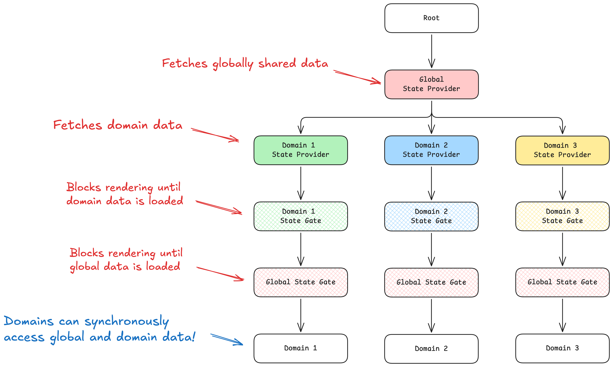

On Sharing State
When sharing state across a React application, it is important to avoid blocking operations, while also eliminating branching logic downstream. This can be accomplished with a Provider and Gate pattern, which allows requests to start as early as possible, and delays blocking operations as late as possible.
Sample implementation of a global state provider. Domain state providers would follow a similar implementation.
const GlobalStateContext = React.createContext(undefined);
export const GlobalStateProvider = ({ children }) => {
// The provider will start loading the globally shared data.
// In this example, we are using Apollo Client, but alternative fetching solutions may be used.
const userQuery = useUserQuery();
const organizationQuery = useOrganizationQuery();
// Store the in-flight requests in global state.
// In this example, we are using React context, but alternative state management solutions may be used.
return (
<GlobalStateContext.Provider value={{ userQuery, organizationQuery }}>
{children}
</GlobalStateContext.Provider>
);
};
export const useGlobalState = () => {
const context = React.useContext(GlobalStateContext);
if (!context) {
throw new Error("useGlobalState must be used under a GlobalStateProvider");
}
return context;
};
Sample implementation of a state gate:
import { useGlobalState } from "./GlobalState.context";
const GatedGlobalStateContext = React.createContext(undefined);
export const GlobalStateGate = ({ children }) => {
const { userQuery, organizationQuery } = useGlobalState();
// Block rendering until all global state is loaded.
if (userQuery.isLoading || organizationQuery.isLoading) {
return <LoadingView />;
}
// Block rendering if there is an error loading global state.
if (userQuery.error || organizationQuery.error) {
return <ErrorView />;
}
// Place loaded data into context or store.
// Downstream components may read this typesafe data synchronously.
return (
<GatedGlobalStateContext.Provider
value={{
user: userQuery.data,
organization: organizationQuery.data,
}}
>
{children}
</GatedGlobalStateContext.Provider>
);
};
// Hook for synchronously reading user data in domains.
export const useUser = () => {
const context = React.useContext(GatedGlobalStateContext);
if (!context) {
throw new Error("useUser must be used under a GlobalStateGate");
}
return context.user;
};
// Hook for synchronously reading organization data in domains.
export const useOrganization = () => {
const context = React.useContext(GatedGlobalStateContext);
if (!context) {
throw new Error("useUser must be used under a GlobalStateGate");
}
return context.organization;
};
Back to Home